Gates
w2d0
Logistics
Announcements
- Welcome to HW/
asm - Action Items discussion
Building Logic Gates with Transistors
CMOS Gates
- CMOS = Complementary MOS
- The PMOS and NMOS transistors complement each other to form the logic gate
- CMOS is not a type of transistor!
- It is a technology that combines both NMOS and PMOS
- You might also see MOSFET: Metal Oxide Semiconductor Field-Effect Transistor
Pull-up and Pull-down
- Only one network will be on at a time
- The pull-up network drives the output when the output is 1.
- The pull-down network drives the output when the output is 0.
- Output, not input, relevant.
- We’re “closing all the switches” to either power or ground.
CMOS Inverter
- The pull-up network drives the output when the output is 1.
- PMOS “closes the switch” when low.
- Which connects power to out.
- The pull-down network drives the output when the output is 0.
- NMOS “closes the switch” when high.
- Which connects ground to out.
Inverter
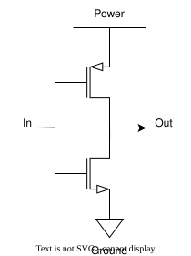
Recall
NMOS “closes the switch” when high.
PMOS “closes the switch” when low.
General CMOS Gate Recipe
- Figure out pulldown network that does what you want (e.g., what gives
0) - Build the “opposite” version of that network for “pull up”
- Combine the two, splitting inputs across them.
- Generally, invert a network by swaping series/parallel and swapping PMOS/NMOS.
What does this compute?
- For power in draw.io, use “Vdd”, read more
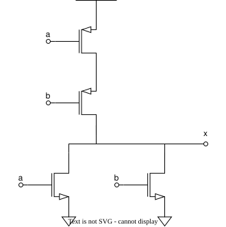
XNOR
- How would we make this?
| \(A\) | \(B\) | \(A == B\) |
|---|---|---|
| 0 | 0 | 1 |
| 0 | 1 | 0 |
| 1 | 0 | 0 |
| 1 | 1 | 1 |
Use Inverters!
- Can use inverter notation; don’t have to.
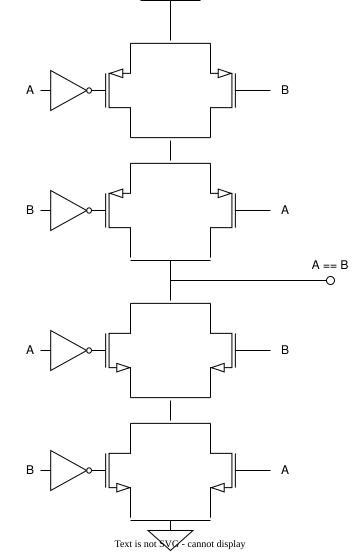
Transistor level…
- Does not scale!
- What should we do?
- Abstract again!
- Logic gates are next!
- But before we jump to the next level of abstraction, let’s over some standard, easy-to-wire primitives
- NAND and NOR
Universality
- NAND and NOR are universal!
- Any Boolean function can be built from them!
CMOS NOR
Truth Table
- Specify all combinations of \(A\) and \(B\)
| \(A\) | \(B\) | \(Y\) |
|---|---|---|
| 0 | 0 | 1 |
| 0 | 1 | 0 |
| 1 | 0 | 0 |
| 1 | 1 | 0 |
Pull Up
- Check the “yes”/“high”/“true”/
1
| \(A\) | \(B\) | \(Y\) |
|---|---|---|
| 0 | 0 | 1 |
| 0 | 1 | 0 |
| 1 | 0 | 0 |
| 1 | 1 | 0 |
Pull Up CMOS
- Specify the pull-up part of CMOS.
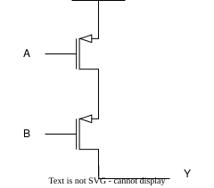
Pull Down
- Check the “no”/“low”/“false”/
0
| \(A\) | \(B\) | \(Y\) |
|---|---|---|
| 0 | 0 | 1 |
| 0 | 1 | 0 |
| 1 | 0 | 0 |
| 1 | 1 | 0 |
Pull Down CMOS
- Specify the pull-down part of CMOS.
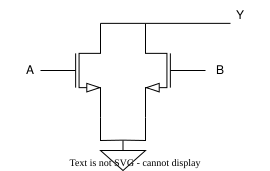
CMOS NOR
| \(A\) | \(B\) | \(Y\) | network |
|---|---|---|---|
| 0 | 0 | 1 | pull-up |
| 0 | 1 | 0 | pull-down |
| 1 | 0 | 0 | pull-down |
| 1 | 1 | 0 | pull-down |
Altogether
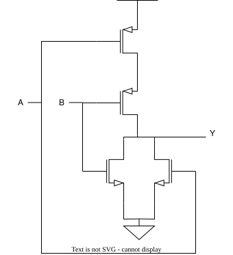
CMOS NOR
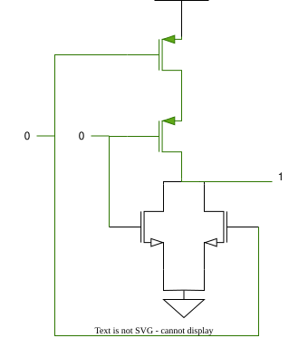
| \(A\) | \(B\) | \(Y\) |
|---|---|---|
| 0 | 0 | 1 |
CMOS NOR
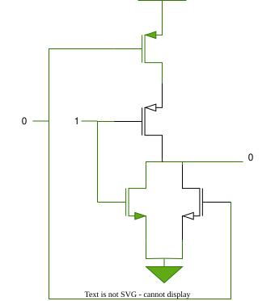
| \(A\) | \(B\) | \(Y\) |
|---|---|---|
| 0 | 1 | 0 |
Others similar
- We leave these to the interested student.
| \(A\) | \(B\) | \(Y\) |
|---|---|---|
| 1 | 0 | 0 |
| 1 | 1 | 0 |
CMOS NAND
Truth Table
- Specify all combinations of \(A\) and \(B\)
| \(A\) | \(B\) | \(Y\) |
|---|---|---|
| 0 | 0 | 1 |
| 0 | 1 | 1 |
| 1 | 0 | 1 |
| 1 | 1 | 0 |
Pull Up
- Check the “yes”/“high”/“true”/
1
| \(A\) | \(B\) | \(Y\) |
|---|---|---|
| 0 | 0 | 1 |
| 0 | 1 | 1 |
| 1 | 0 | 1 |
| 1 | 1 | 0 |
Pull Up CMOS
- Specify the pull up part of CMOS.
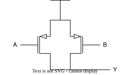
Pull Down
- Check the “no”/“low”/“false”/
0
| \(A\) | \(B\) | \(Y\) |
|---|---|---|
| 0 | 0 | 1 |
| 0 | 1 | 1 |
| 1 | 0 | 1 |
| 1 | 1 | 0 |
Pull Down CMOS
- Specify the pull-down part of CMOS.
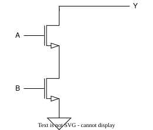
CMOS NOR
| \(A\) | \(B\) | \(Y\) | network |
|---|---|---|---|
| 0 | 0 | 1 | pull-up |
| 0 | 1 | 1 | pull-up |
| 1 | 0 | 1 | pull-up |
| 1 | 1 | 0 | pull-down |
Altogether
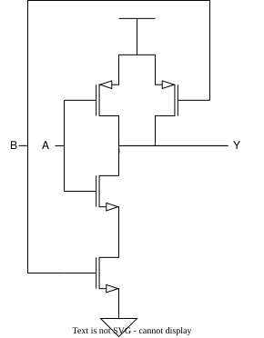
Exercise
- 10 minutes
- Trace out each of the following
- Draw.io or jspaint.app
| \(A\) | \(B\) | \(Y\) |
|---|---|---|
| 0 | 0 | 1 |
| 0 | 1 | 1 |
| 1 | 0 | 1 |
| 1 | 1 | 0 |
CMOS AND
Uh oh!
- We discover a novel constraint.
CMOS AND
| \(A\) | \(B\) | \(Y\) |
|---|---|---|
| 0 | 0 | 0 |
| 0 | 1 | 0 |
| 1 | 0 | 0 |
| 1 | 1 | 1 |
We would try…
- We would just place a pull-up on the last row:
| \(A\) | \(B\) | \(Y\) |
|---|---|---|
| 0 | 0 | 0 |
| 0 | 1 | 0 |
| 1 | 0 | 0 |
| 1 | 1 | 1 |
Pull Up Candidate
- We would naturally use NMOS transistors - which close the circuit in response to a “high”/“true”/“yes”/
1on the gate. - We place them in a series.
This breaks the law:
- The law: can’t put NMOS on “top”
- That’s two NMOS on top.
Solution
- Noted geniuses us have previously more or less solved this.
- We made NAND, which doesn’t have a violating NMOS.
Comparison
- We also have previously made NOT.
| \(A\) | \(B\) | NAND | AND |
|---|---|---|---|
| 0 | 0 | 1 | 0 |
| 0 | 1 | 1 | 0 |
| 1 | 0 | 1 | 0 |
| 1 | 1 | 0 | 1 |
NOT NAND gives AND
- We simply take NAND and put an inverter on the out.
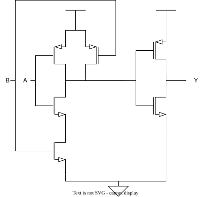
CMOS OR
This should be easy
- Surely we won’t encounter the same secret problem as AND.
CMOS OR
| \(A\) | \(B\) | \(Y\) |
|---|---|---|
| 0 | 0 | 0 |
| 0 | 1 | 1 |
| 1 | 0 | 1 |
| 1 | 1 | 1 |
We would try
- Let’s look at these:
| \(A\) | \(B\) | \(Y\) |
|---|---|---|
| 0 | 0 | 0 |
| 0 | 1 | 1 |
| 1 | 0 | 1 |
| 1 | 1 | 1 |
CMOS OR
- CMOS OR also requires:
- NMOS gates (which close circuits to
1) - In order to pass through a
1on the “pull-up” - This is a “rule violation”.
- NMOS gates (which close circuits to
- Pesky physics getting into our perfectly good computer science once again!
Use the hack
- Just take NOR and NOT it.
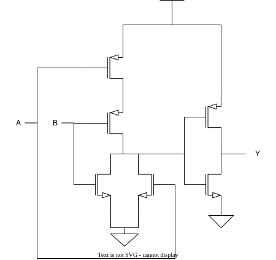
Assessing Costs
Why it matters
| Gate | # of Transistors |
|---|---|
| NOT | 2 |
| AND | 6 |
| OR | 6 |
| NAND | 4 |
| NOR | 4 |
| XOR | 12 |
| XNOR | 12 |
Design larger systems!
- We need to start somewhere – usually with a functional specification
- “If \(C\) is
1then copy \(B\) to \(Y\), otherwise copy \(A\) to \(Y\)- What?
- “Truth tables” are a concise description of every combinational function the combinational system’s function
- An output is specified for every input combination.
Inverter/Not Gate
- NOT and identity are minimal examples.
| A | Y |
|---|---|
| 0 | 1 |
| 1 | 0 |
We note
- We do note however there are four (4) possible “gates” that take a single input
| \(A\) | 0 |
1 |
= |
! |
|---|---|---|---|---|
| 0 | 0 | 1 | 0 | 1 |
| 1 | 0 | 1 | 1 | 0 |
What can we build?
- Thus far we have looked at only a subset of possible gates.
| \(A\) | \(B\) | & |
| |
!& |
!| |
|---|---|---|---|---|---|
| 0 | 0 | 0 | 0 | 1 | 1 |
| 0 | 1 | 0 | 1 | 1 | 0 |
| 1 | 0 | 0 | 1 | 1 | 0 |
| 1 | 1 | 1 | 1 | 0 | 0 |
How many?
- How many gates could we build?
- We note:
- We could ignore either of \(A\) or \(B\)
- We could ignore both of \(A\) and \(B\)
- We can take any expression over \(A\) and \(B\)
- We note:
The answer
- We note there are 4 possible combinations of inputs.
- How many unique possible, say, “arrays” of output can be expressed with 4 possible combinations… say, four bits of information.
- With four bits of information, we can express \(2^4 = 16\) possible gates.
They are
- Recall, we need to design our gates using a pull-up network of pMOS transistors and a pull-down network of nMOS transistors AND OR NAND NOR What gates can we
- build?
- define? Let’s start by considering only 2-input gates. How many possible 2-input gates are there? KEY IDEA: As many as there are 2-input truth tables.
All the gates!
There are only 16 possible 2-input gates… Let’s examine all of them. Some we already know, others are just silly. How many of these gates can be implemented using a single CMOS gate? Do we really need all of these gates? Nope! Once we realize that we can describe all of them using just AND, OR, and NOT
Composing gates: AND and OR
Each can be constructed using a pair of CMOS gates AND is just NAND with an inverter, and OR is just NOR with an inverted output. AND OR These two gates are particularly important. Using them will allows us to develop a systematic approach for constructing any combinational A A y Y function. B B
Composing gates
B>A XOR A B Y A y A Y B B How many different gates do we really need? We can always do it with 3 different types of gates (AND, OR, INVERT), and sometimes with 2, but, can we use fewer?
Implementing XOR with AND, OR, NOT!
Truth Table | A | B | Y | | — | — | — | | 0 | 0 | 0 | | 0 | 1 | 1 | | 1 | 0 | 1 | | 1 | 1 | 0 | Challenge question: convert this use ONLY NAND gates. How many NAND gates did you use?
One gate will do! A UNIVERSAL gate is one that can be used to implement
ANY COMBINATIONAL FUNCTION. There are many UNIVERSAL gates, but not all gates are UNIVERSAL. NANDs and NORs are UNIVERSAL! = = INVERTER = = AND = = OR NANDS NORS
AND Gate
| Symbol | Truth Table | Equation | |||
|---|---|---|---|---|---|
| A | B | Y |
Y = A x B A | | Y | 0 | 0 | 0 | | | — | — | — | — | — | — | or B | | | 0 | 1 | 0 | Y = AB | | — | — | — | — | — | —— | | | | 1 | 0 | 0 | | | | | 1 | 1 | 1 | |
OR Gate
Symbol Equation Truth Table | | A | B | Y | | — | — | — | — | Y = A + B A | Y | 0 | 0 | 0 | | — | — | — | — | B | | 0 | 1 | 1 | | — | — | — | — | | | 1 | 0 | 1 | | | 1 | 1 | 1 |
XOR Gate
| Symbol | Truth Table | Equation | |||
|---|---|---|---|---|---|
| A | B | Y |
A 𝐴 + Y = 𝐵 | | Y | 0 | 0 | 0 | | | — | — | — | — | — | — | B | | | 0 | 1 | 1 | | | — | — | — | — | — | — | | | | 1 | 0 | 1 | | | | | 1 | 1 | 0 | |
NAND
| Symbol | Truth Table | Equation | |||
|---|---|---|---|---|---|
| A | B | Y |
A Y = 𝐴 𝑥 𝐵 | | Y | 0 | 0 | 1 | | | — | — | — | — | — | — | or B | | | 0 | 1 | 1 | | | — | — | — | — | — | — | 𝑌 = 𝐴𝐵 | | | 1 | 0 | 1 | | | — | — | — | — | — | — | | | | 1 | 1 | 0 | |
NOR
| Symbol | Truth Table | Equation | |||||
|---|---|---|---|---|---|---|---|
| A | B | Y |
A | | | | | | Y = | 𝐴 + | 𝐵 | | — | — | — | — | — | — | — | — | | | Y | 0 | 0 | 1 | | | | B | | | 0 | 1 | 0 | | | | | — | — | — | — | — | — | — | — | | | | 1 | 0 | 0 | | | | | | | 1 | 1 | 0 | | | |
XNOR Gate
| Symbol | Truth Table | Equation | |||
|---|---|---|---|---|---|
| A | B | Y |
A Y = 𝐴 + 𝐵 | | Y | 0 | 0 | 1 | | | — | — | — | — | — | — | B | | | 0 | 1 | 0 | | | — | — | — | — | — | — | | | | 1 | 0 | 0 | | | | | 1 | 1 | 1 | |
FORMING
EQUATIONS FROM LOGIC DIAGRAMS
Ex1: Forming Equations from Logic
Diagrams
Ex1: Forming Equations from Logic
Diagrams | 𝑌 = | 𝐴𝐵 | + 𝐶𝐷 | | — | — | —- |
Ex2: Forming Equations from Logic Diagrams
Ex2: Forming Equations from Logic Diagrams
| 𝑌 = | (𝐴 + | 𝐵)(𝐶 | + 𝐷) |
|---|
Ex3: Forming Equations from Logic
Diagrams
Ex3: Forming Equations from Logic Diagrams
ത | 𝑌 = | 𝐴𝐵 | 𝐶 + | 𝐷 + | 𝐸 | | — | — | — | — | — |
EX4: Forming Equations from Logic Diagrams
Forming Equations from Logic Diagrams
| 𝑌 = | (𝐴𝐵 | + 𝐶) (𝐷 | + 𝐸) |
|---|
FORMING LOGIC
DIAGRAMS FROM EQUATIONS
Ex1: Forming Logic Diagrams from
| Equations | 𝑌 = | 𝐴 + | 𝐵 𝐶 |
|---|
Ex1: Forming Logic Diagrams from
| Equations | 𝑌 = | 𝐴 + | 𝐵 𝐶 |
|---|
Ex2: Forming Logic Diagrams from
Equations | 𝑌 = | 𝐴 + | 𝐵 𝐶𝐷 | | — | — | —- |
Ex2: Forming Logic Diagrams from
Equations | 𝑌 = | 𝐴 + | 𝐵 𝐶𝐷 | | — | — | —- |
Ex3: Forming Logic Diagrams from
Equations | 𝑌 = | (𝐴 + | 𝐵)(𝐶𝐷) | + 𝐸 | | — | —- | —— | — |
Ex3: Forming Logic Diagrams from
Equations | 𝑌 = | (𝐴 + | 𝐵)(𝐶𝐷) | + 𝐸 | | — | —- | —— | — |
Forming Logic Diagrams from Equations
ҧ | 𝑌 = | (𝐴)( | 𝐵 + | 𝐶) + | 𝐷𝐸 | | — | —- | — | —- | — |
Forming Logic Diagrams from Equations
ҧ | 𝑌 = | (𝐴)( | 𝐵 + | 𝐶) + | 𝐷𝐸 | | — | —- | — | —- | — |
FORMING TRUTH
TABLES FROM EQUATIONS
Ex1: Forming Truth Tables from
Equations | | | | A | B | Y | | — | — | — | — | — | — | | | | | 0 | 0 | | ത | 𝑌 = | 𝐴 + | 𝐵 | 0 | 1 | | | — | — | — | — | — | — | | | | | 1 | 0 | | | | | | 1 | 1 | |
Ex1: Forming Truth Tables from
Equations | | | | A | B | Y | | — | — | — | — | — | — | | | | | 0 | 0 | 1 | ത | 𝑌 = | 𝐴 + | 𝐵 | 0 | 1 | 0 | | — | — | — | — | — | — | | | | | 1 | 0 | 1 | | | | | 1 | 1 | 1 |
Ex2: Forming Truth Tables from
Equations | | | | A | B | C | Y | | — | — | — | — | — | — | — | | | | | 0 | 0 | 0 | | | | | | 0 | 0 | 1 | | ҧ | 𝑌 = | 𝐴𝐵 | + 𝐶 | | | | | | — | — | —– | — | — | — | — | | | | | 0 | 1 | 0 | | | | | | 0 | 1 | 1 | | | | | | 1 | 0 | 0 | | | | | | 1 | 0 | 1 | | | | | | 1 | 1 | 0 | | | | | | 1 | 1 | 1 | |
Ex2: Forming Truth Tables from
Equations | | | | A | B | C | Y | | — | — | — | — | — | — | — | | | | | 0 | 0 | 0 | 1 | | | | | 0 | 0 | 1 | 0 | ҧ | 𝑌 = | 𝐴𝐵 | + 𝐶 | | | | | | — | — | —– | — | — | — | — | | | | | 0 | 1 | 0 | 1 | | | | | 0 | 1 | 1 | 0 | | | | | 1 | 0 | 0 | 1 | | | | | 1 | 0 | 1 | 0 | | | | | 1 | 1 | 0 | 1 | | | | | 1 | 1 | 1 | 1 |
Forming Truth Tables from Equations
| A | B | Y | |||
|---|---|---|---|---|---|
| 0 | 0 | ||||
| ҧ ത | 0 | 1 | |||
| 𝑌 = | 𝐴𝐵 | + 𝐴𝐵 | |||
| 1 | 0 | ||||
| 1 | 1 |
FORMING
EQUATIONS FROM TRUTH TABLES
Sum of Products Form
When two or more products (AND) are summed (OR) together | Sum of Products | | | | | Not Sum of Products | | —————- | — | — | — | — | ——————— | | 𝑌 = 𝐴𝐵 + 𝐴𝐶 | | | | | 𝑌 = (𝐴 + 𝐵)(𝐶 + 𝐴) | Approach: write down a boolean expression for every ‘1’ in the output
Ex: Forming Equations from Truth Tables
| A | B | C | Y |
|---|---|---|---|
| 0 | 0 | 0 | 1 |
| 0 | 0 | 1 | 0 |
| 0 | 1 | 0 | 1 |
| 0 | 1 | 1 | 0 |
| 1 | 0 | 0 | 0 |
| 1 | 0 | 1 | 1 |
| 1 | 1 | 0 | 0 |
| 1 | 1 | 1 | 0 |
Ex: Forming Equations from Truth Tables
| A | B | C | Y |
|---|
ҧ ത ҧ 𝐴𝐵𝐶 | 0 | 0 | 0 | 1 | | | | | | — | — | — | — | — | — | — | — | | 0 | 0 | 1 | 0 | | | | | ҧ ҧ 𝐴𝐵𝐶 | 0 | 1 | 0 | 1 | | | | | | — | — | — | — | — | —– | — | — | | | | | | | ҧ ത ҧ | ҧ ҧ | ത | 𝑌 = 𝐴𝐵𝐶+ 𝐴𝐵𝐶 + 𝐴𝐵𝐶 | 0 | 1 | 1 | 0 | | | | | | — | — | — | — | — | — | — | — | | 1 | 0 | 0 | 0 | | | | | ത | 1 | 0 | 1 | 1 | 𝐴𝐵𝐶 | | | | | — | — | — | — | — | — | — | — | | 1 | 1 | 0 | 0 | | | | | | 1 | 1 | 1 | 0 | | | | |
Forming Equations from Truth Tables
| A | B | C | Y |
|---|---|---|---|
| 0 | 0 | 0 | 0 |
| 0 | 0 | 1 | 1 |
| 0 | 1 | 0 | 0 |
| 0 | 1 | 1 | 0 |
| 1 | 0 | 0 | 1 |
| 1 | 0 | 1 | 0 |
| 1 | 1 | 0 | 1 |
| 1 | 1 | 1 | 1 |
A Systematic Design Approach
Truth Table 1) Write the functional spec as a truth table 2) Write down a Boolean expression for every ‘1’ in the output Y = (!C && !B && A) || (!C && B && A) || (C && B && !A) || (C && B && A) 3) Wire up the ideal gates, replace them with equivalent realizable gates, call it a day, and go home! This approach will always give us logic -it’s systematic! -it works! expressions in a particular form: -it’s easy! SUM-OF-PRODUCTS -we are done! (?)
Straightforward Synthesis
A B C We can implement sum-of- A products with just 3 levels of B C logic, using… Y A INVERTERS/AND/OR! B C A B C